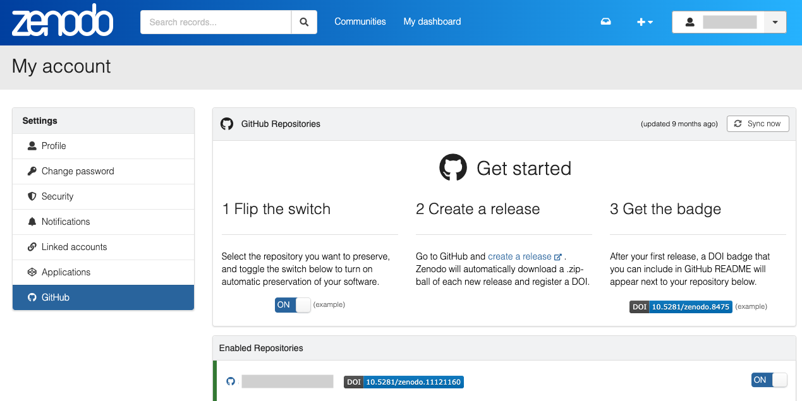

Practical material
⏰ Time Estimation: X minutes
💬 Learning Objectives:
- Organize and structure your data and data analysis with Cookiecutter templates
- Define metadata fields and collect metadata when creating a Cookiecutter folder
- Establish naming conventions for your data
- Create a catalog of your data
- Use GitHub repositories of your data analysis and display them as GitHub Pages
- Archive GitHub repositories on Zenodo
This practical version covers practical aspects of RDM applied to biodata. The exercises provided here aim to help you organize and structure your datasets and data analyses. You’ll learn how to manage your experimental metadata effectively and safely version control and archive your data analyses using GitHub repositories and Zenodo. Through these guided exercises and step-by-step instructions, we hope you will acquire essential skills for managing and sharing your research data efficiently, thereby enhancing the reproducibility and impact of your work.
Ensure all necessary tools and software are installed before beginning the practical exercises:
- A GitHub account for hosting and collaborating on projects
- Git for version control of your projects
- A Zenodo account for archiving and sharing your research outputs
- Python
- pip for managing Python packages
- Cookicutter for creating folder structure templates (
pip install cookiecutter) - cruft to version control your templates (
pip install cruft)
Two more tools will be required, choose the one you are familiar with or the first option:
- Option a. Install Quarto. We recommend Quarto as is easy to use and provides native support for notebooks (both R Markdown and Jupyter Notebooks). It requires no additional extensions or dependencies.
- Option b. Install MkDocs and MkDocs extensions using the command line. Additional extensions are optional but can be useful if you choose this approach.
pip install mkdocs # create webpages
pip install mkdocs-material # customize webpages
pip install mkdocs-video # add videos or embed videos from other sources
pip install mkdocs-minify-plugin # Minimize html code
pip install mkdocs-git-revision-date-localized-plugin # display last updated date
pip install mkdocs-jupyter # include Jupyter notebooks
pip install mkdocs-bibtex # add references in your text (`.bib`)
pip install neoteroi-mkdocs # create author cards
pip install mkdocs-table-reader-plugin # embed tabular format files (`.tsv`)1. Organize and structure your datasets and data analysis
Establishing a consistent file structure and naming conventions will help you efficiently manage your data. We will classify your data and data analyses into two distinct types of folders to ensure the data can be used and shared by many lab members while preventing modifications by any individual:
- Data folders (assay or external databases and resources): They house the raw and processed datasets, alongside the pipeline/workflow used to generate the processed data, the provenance of the raw data, and quality control reports of the data. The data should be locked and set to read-only to prevent unintended modifications. This applies to experimental data generated in your lab as well as external resources. Provide an MD5 checksum file when you download them yourself to verify their integrity.
- Project folders: They contain all the essential files for a specific research project. Projects may use data from various resources or experiments, or build upon previous results from other projects. The data should not be copied or duplicated, instead, it should be linked directly from the source.
Data and data analysis are kept separate because a project may utilize one or more datasets to address a scientific question. Data can be reused in multiple projects over time, combined with other datasets for comparison, or used to build larger datasets. Additionally, data may be utilized by different researchers to answer various research questions.
Data folders
Whether your lab generates its own experimental data, receives it from collaborators, or works with previously published datasets, the data folder should follow a similar structure to the one presented here. Create a separate folder for each dataset, including raw files and processed files alongside the corresponding documentation and pipeline that generated the processed data. Raw files should remain untouched, and you should consider locking modifications to the final results once data preprocessing is complete. This precaution helps prevent unwanted changes to the data. Each subfolder should be named in a way that is distinct, easily readable and clear at a glance. Check this lesson for tips on naming conventions.
Let’s explore a potential folder structure and the types of files you might encounter within it.
<data_type>_<keyword>_YYYYMMDD/
├── README.md
├── CHECKSUMS
├── pipeline
├── pipeline.md
├── scripts/
├── processed
├── fastqc/
├── multiqc/
├── final_fastq/
└── raw
├── .fastq.gz
└── samplesheet.csv- README.md: This file contains a detailed description of the dataset commonly in markdown format. It should include the provenance of the raw data (such as samples, laboratory protocols used, the aim of the project, folder structure, naming conventions, etc.).
- metadata.yml: This metadata file outlines different keys and essential information, usually presented in YAML format. For more details, refer to this lesson.
- pipeline.md: This file provides an overview of the pipeline used to process raw data, as well as the commands to run the pipeline. The pipeline itself and all the required scripts should be collected in the same directory.
- processed: This folder contains the results from the preprocessing pipeline. The content vary depending on the specific pipeline used (create additional subdirectories as needed).
- raw: This folder holds the raw data.
- .fastq.gz: For example, in NGS assays, there should be ‘fastq’ files.
- samplesheet.csv: This file holds essential metadata for the samples, including sample identification, experimental variables, batch information, and other metrics crucial for downstream analysis. It is important that this file is complete and current, as it is key to interpreting results. If you are considering running nf-core pipelines, this file will be required.
Project folders
On the other hand, we have another type of folder called Projects which refers to data analyses that are specific to particular tasks, such as those involved in preparing a potential article. In this folder, you will create a subfolder for each project that you or your lab is working on. Each Project subfolder should include project-specific information, data analysis pipelines, notebooks, and scripts used for that particular project. Additionally, you should include an environment file with all the required software and dependencies needed for the project, including their versions. This helps ensure that the analyses can be easily replicated and shared with others.
The Project folder should be named in a way that is unique, easy to read, distinguishable, and clear at a glance. For example, you might name it based on the main author’s initials, the dataset being analyzed, the project name, a unique descriptive element related to the project, or the part of the project you are responsible for, along with the date:
<project>_<keyword>_YYYYMMDDNow, let’s explore an example of a folder structure and the types of files you might encounter within it.
<project>_<keyword>_YYYYMMDD
├── data
│ └── <ID>_<keyword>_YYYYMMDD <- symbolic link
├── documents
│ └── research_project_template.docx
├── metadata.yml
├── notebooks
│ └── 01_data_processing.rmd
│ └── 02_data_analysis.rmd
│ └── 03_data_visualization.rmd
├── README.md
├── reports
│ └── 01_data_processing.html
│ └── 02_data_analysis.html
│ ├── 03_data_visualization.html
│ │ └── figures
│ │ └── tables
├── requirements.txt // env.yaml
├── results
│ ├── figures
│ │ └── 02_data_analysis/
│ │ └── heatmap_sampleCor_20230102.png
│ ├── tables
│ │ └── 02_data_analysis/
│ │ └── DEA_treat-control_LFC1_p01.tsv
│ │ └── SumStats_sampleCor_20230102.tsv
├── pipeline
│ ├── rules // processes
│ │ └── step1_data_processing.smk
│ └── pipeline.md
├── scratch
└── scripts- data: This folder contains symlinks or shortcuts to the actual data files, ensuring that the original files remain unaltered.
- documents: This folder houses Word documents, slides, or PDFs associated with the project, including data and project explanations, research papers, and more. It also includes the Data Management Plan.
- research_project_template.docx. If you download our template you will find a is a pre-filled Data Management Plan based on the Horizon Europe guidelines named ‘Non-sensitive_NGS_research_project_template.docx’.
- metadata.yml: metadata file describing various keys of the project or experiment (see this lesson).
- notebooks: This folder stores Jupyter, R Markdown, or Quarto notebooks containing the data analysis. Figures and tables used for the reports are organized under subfolders named after the notebook that created them for provenance purposes.
- README.md: A detailed project description in markdown or plain-text format.
- reports: Notebooks rendered as HTML, docx, or PDF files for sharing with colleagues or as formal data analysis reports.
- figures: figures produced upon rendering notebooks. The figures will be saved under a subfolder named after the notebook that created them. This is for provenance purposes so we know which notebook created which figures.
- requirements.txt: This file lists the necessary software, libraries, and their versions required to reproduce the code. If you’re using conda environments, you will also find the env.yaml file here, which outlines the specific environment configuration.
- results: This folder contains analysis results, such as figures and tables. Organizing results by the pipeline, script, or notebook that generated them will make it easier to locate and interpret the data.
- pipeline: A folder containing pipeline scripts or workflows for processing and analyzing data.
- scratch: A folder designated for temporary files or workspace for experiments and development.
- scripts: Folder for helper scripts needed to run data analysis or reproduce the work.
Template engine
Creating a folder template is straightforward with cookiecutter a command-line tool that generates projects from templates (called cookiecutters). For example, it can help you set up a Python package project based on a Python package project template.
Here are some template that you can use to get started, adapt and modify them to your own needs:
Create your own template from scratch.
Quick tutorial on cookiecutter
Building a Cookiecutter template from scratch requires defining a folder structure, crafting a cookiecutter.json file, and outlining placeholders (keywords) that will be substituted when generating a new project. Here’s a step-by-step guide on how to proceed:
Step 1: Create a Folder Template
First, begin by creating a folder structure that aligns with your desired template design. For instance, let’s set up a simple Python project template:
my_template/
|-- {{cookiecutter.project_name}}
| |-- main.py
|-- tests
| |-- test_{{cookiecutter.project_name}}.py
|-- README.mdIn this example, {cookiecutter.project_name} is a placeholder that will be replaced with the actual project name when the template is used. This directory contains a python script (‘main.py’), a subdirectory (‘tests’) with a second python script named after the project (‘test_{{cookiecutter.project_name}}.py’) and a ‘README.md’ file.
Step 4: Review the Generated Project
After the generation process is complete, navigate to the directory where Cookiecutter created the new project. You will find a project structure with the placeholders replaced by the values you provided.
Use Cookiecutter to create custom templates for your folders. You can do it from scratch (see Exercise 1, part B) or opt for one of our pre-made templates available as a Github repository (recommended for this workshop). Feel free to tailor the template to your specific requirements—you don’t have to follow our examples exactly.
Requirements
We assume you have already gone through the requirements at the beginning of the practical lesson. This includes installing the necessary tools and setting up accounts as needed.
Project
Go to our Cookicutter template and click on the Fork button at the top-right corner of the repository page to create a copy of the repository on your own GitHub account or organization.

Open a terminal on your computer, copy the URL of your fork and clone the repository to your local machine (the URL should look something like https://github.com/your_username/cookiecutter-template):
git clone <your URL to the template>If you have a GitHub Desktop, click Add and select “Clone repository†from the options
Open the repository and navigate through the different directories
Modify the contents of the repository as needed to fit your project’s requirements. You can change files, add new ones. remove existing one or adjust the folder structure. For inspiration, review the data structure above under ‘Project folder’. For instance, this template is missing the ‘reports’ directory and add the ‘requirements.txt’ file. Consider creating it, along with a subdirectory named ‘reports/figures’.
├── results/ │ ├── figures/ ├── requirements.txtHere’s an example of how to do it:
# Open your terminal and navigate to your template directory. Then: cd \{\{\ cookiecutter.project_name\ \}\}/ mkdir reports touch requirements.txtCommit and push changes when you are done with your modifications
- Stage the changes with
git add - Commit the changes with a meaningful commit message
git commit -m "update cookicutter template" - Push the changes to your forked repository on Github
git push origin main(or the appropriate branch name)
Test your template by using
cookiecutter <URL to your GitHub repository "cookicutter-template">Fill up the variables and verify that the new structure (and folders) looks like you would expect. Have any new folders been added, or have some been removed?
2. Data documentation
Data documentation involves organizing, describing, and providing context for datasets and projects. While metadata concentrates on the data itself, README files provide a broader perspective on the overall project or resource.
Metadata
Choose the format that best suits the project’s needs. In this workshop, we will focus on YAMl as it is highly used for configuration files (e.g., in conda or pipelines).
Link to the file format database.
Metadata in biological datasets refers to the information that describes the data and provides context for how the data was collected, processed, and analyzed. Metadata is crucial for understanding, interpreting, and using biological datasets effectively. It also ensures that datasets are reusable, reproducible and understandable by other researchers. Some of the components may differ depending on the type of project, but there are general concepts that will always be shared across different projects:
- Sample information and collection details
- Biological context (such experimental conditions if applicable)
- Data description
- Data processing steps applied to the raw data
- Annotation and Ontology terms
- File metadata (file type, file format, etc.)
- Ethical and Legal Compliance (ownership, access, provenance)
To maximize the usefulness of metadata, aim to use controlled vocabularies across all fields. Read more about data documentation and find ontology services examples in lesson 4. We encourage you to begin implementing them systematically on your own (under the “sources†section, you will find some helpful links to guide you putting them in practice).
If you work with NGS data, check out this recommendations and examples of metadata for samples, projects and datasets.
README file
Choose the format that best suits the project’s needs. In this workshop, we will focused on Markdown as it is the most used format due to its balance of simplicity and expressive formatting options.
Link to the file format database
The README.md file is a markdown file that provides a comprehensive description of the data within a folder. Its rich text format (including bold, italic, links, etc.) allows you to explain the contents of the folder, as well as the reasons and methods behind its creation or collection. The content will vary depending on what it described (data or assays, project, software…).
Here is an example of a README file for a bioinformatics project:
3. Naming conventions
As discussed in lesson 3, consistent naming conventions are key for interpreting, comparing, and reproducing findings in scientific research. Standardized naming helps organize and retrieve data or results, allowing researchers to locate and compare similar types of data within or across large datasets.
4. Create a catalog of your data folder
The next step is to collect all the datasets that you have created in the manner explained above. Since your folders all should contain the metadata.yml file in the same place with the same metadata, it should be very easy to iteratively go through all the folders and merge all the metadata.yml files into a one single table. he table can be easily viewed in your terminal or even with Microsoft Excel.
Shiny apps
To get the most out of your metadata file and the ones from other colleagues, you can combine them and explore them by creating an interactive catalog browser. You can create interactive web apps straight from R or Python. Whether you have generated a tabulated-file or a sqlite database, browse through the metadata using Shiny. Shiny apps are perfect for researchers because they enable you to create interactive visualizations and dashboards with dynamic data inputs and outputs without needing extensive web development knowledge. Shiny provides a variety of user interface components such as forms, tables, graphs, and maps to help you organize and present your data effectively. It also allows you to filter, sort, and segment data for deeper insights.
- For R Enthusiasts
Explore demos from the R Shiny community to kickstart your projects or for inspiration.
- For python Enthusiasts
Shiny for Python provides live, interactive code throughout its entire tutorial. Additionally, it offers a great tool called Playground, where you can code and test your own app to explore how different features render.
5. Version control using Git and GitHub
Version control involves systematically tracking changes to a project over time, offering a structured way to document revisions and understand the progression of your work. In research data management and data analytics, it plays a critical role and provides numerous benefits.
Git is a distributed version control system that helps developers and researchers efficiently manage project history, collaborate seamlessly, and maintain data integrity. On the other hand, GitHub is a web-based platform that builds on Git’s functionality by providing a centralized, collaborative hub for hosting Git repositories. It offers several key functionalities, such as tracking issues, security features to safeguard your repos, and GitHub Pages that allow you to create websites to showcase your projects.
GitHub users can create organizations, allowing groups to collaborate or create repositories under the same organization umbrella. You can create an educational organization on Github for free, by setting up a Github account for your lab.
Follow these instructions to create a GitHub organization.
Once you’ve established your GitHub organization, be sure to create your repositories within the organization’s space rather than under your personal user account. This keeps your projects centralized and accessible to the entire group. Best practices for managing an organization on GitHub include setting clear access permissions, regularly reviewing roles and memberships, and organizing repositories effectively to keep your projects structured and easy to navigate.
Setting up a GitHub repository for your project folder
Version controlling your data analysis folders becomes straightforward once you’ve established your Cookiecutter templates. After you’ve created several folder structures and metadata using your Cookiecutter template, you can manage version control by either converting those folders into Git repositories or copying a folder into an existing Git repository. Both approaches are explained in Lesson 5.
If you would like to know more about Git commits and the best way to make clear Git messages, check out this post!
GitHub Pages
After creating your repository and hosting it on GitHub, you can now add your data analysis reports—such as Jupyter Notebooks, R Markdown files, or HTML reports—to a GitHub Page website. Setting up a GitHub Page is straightforward, and we recommend following GitHub’s helpful tutorial. However, we will go through the key steps in the exercise below. There are several ways to create your web pages, but we suggest using Quarto as a framework to build a sleek, professional-looking website with ease. The folder templates from the previous exercise already contain the necessary elements to launch a webpage. Familiarizing yourself with the basics of Quarto will help you design a webpage that suits your preferences. Other common options include MkDocs. If you want to use MkDocs instead, click here and follow the instructions.
Here are some useful links to get started with Github Pages:
6. Archive GitHub repositories on Zenodo
Archives are specialized digital platforms that provide secure storage, curation, and dissemination of scientific data. They play a crucial role in the research community by acting as trusted repositories for preserving valuable datasets. With standardized formats and thorough curation processes, they ensure the long-term accessibility and citability of research findings. Researchers globally rely on these repositories to share, discover, and validate scientific information, promoting transparency, collaboration, and knowledge growth across various fields.
In the next practical exercise, you will archive your Project folder, which contains data analyses (software, code and pipelines), in a repository such as Zenodo. This can be done by linking your Zenodo account to your GitHub account.
Data should be deposited in a domain-specific archive. If you want to know more about these archives, check out this lesson.
Zenodo
Zenodo is an open-access digital repository that supports the archiving of scientific research outputs, including datasets, papers, software, and multimedia files. Affiliated with CERN and backed by the European Commission, Zenodo promotes transparency, collaboration, and the advancement of knowledge globally. Researchers can easily upload, share, and preserve their data on its user-friendly platform. Each deposit receives a unique DOI for citability and long-term accessibility. Zenodo also offers robust metadata options and allows linking your GitHub account to archive a specific release of your GitHub repository directly to Zenodo. This integration streamlines the process of preserving a snapshot of your project’s progress.
- In order to archive your GitHub repos in Zenodo, link your Zenodo and GitHub accounts
- Once your accounts are linked, go to your Zenodo GitHub account settings and turn on the GitHub repository you want to archive. 
- Creating a Zenodo archive is now as simple as making a release in your GitHub repository. Remember to create a proper tag and specify the version.
NOTE: If you make a release before enabling the GitHub repository in Zenodo, it will not appear in Zenodo!
- Zenodo will automatically detect the release and it should appear on your Zenodo upload page:
My dashboard > Uploads. - This archive is assigned a unique Digital Object Identifier (DOI), making it a citable reference for your work.

Before submitting your work in a journal, make sure to link your data analysis repository to Zenodo, get a DOI, and cite it in your manuscript!
Wrap up
In this small workshop, we have learned how to improve the FAIRability of your data, as well as organize and structure it in a way that will be much more useful in the future. These advantages do not serve yourself only, but your teammates, group leader, and the general scientific population! We hope that you found this workshop useful. If you would like to leave us some comments or suggestions, feel free to contact us.